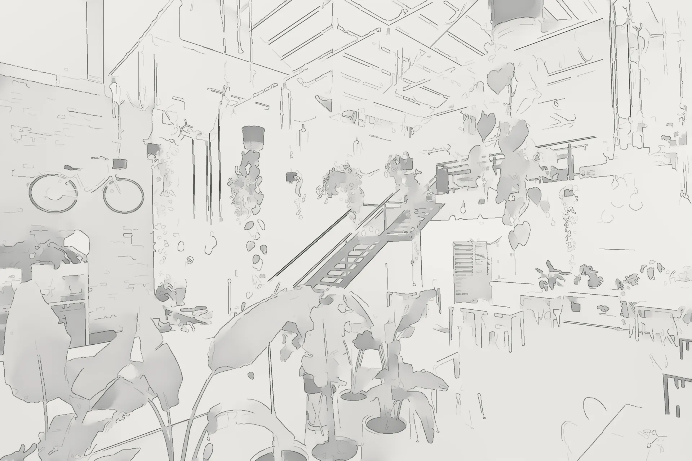
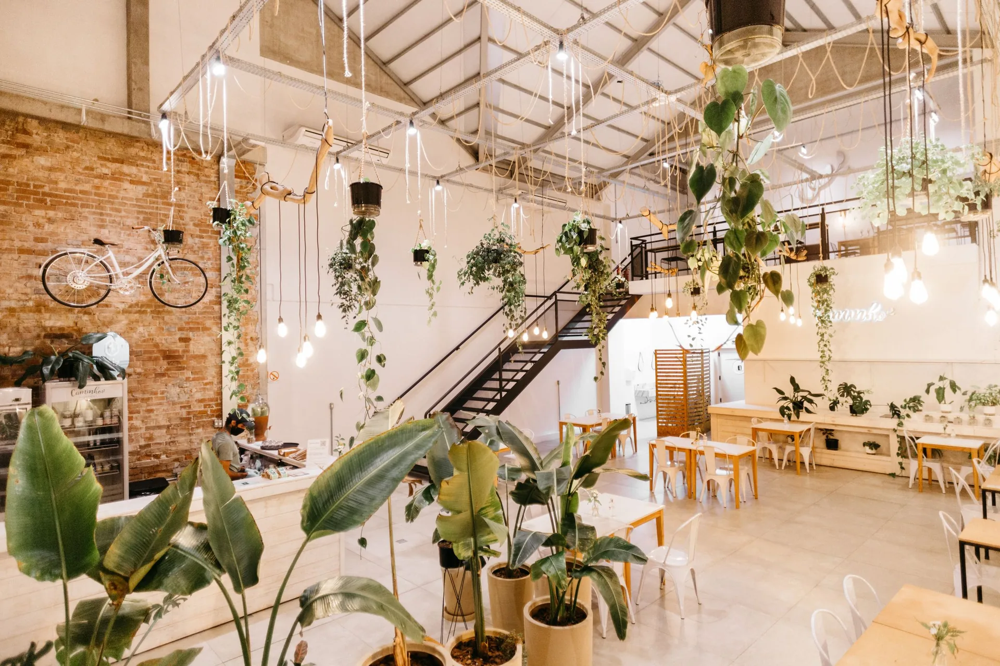

08:00 · Day one
Café
01 The drawing
Week 1 · Measured survey
Counter on the brick wall, so the queue forms along it and not across the door. The stair stays where it is.
02 The sketch
Week 2 · Concept
Drawn from the door: the trusses, the steel stair, a ceiling of plants to walk in under.
03 The shell
Week 4 · Strip-out and making good
Brick cleaned back, trusses painted, the mezzanine made safe. Everything stays white until it’s decided.
04 Joinery & fit-out
Weeks 6–9 · Joinery and FF&E
The steel stair goes in first, then the counter and the bench. Planters next, and the tables work round them.
05 Finishes
Weeks 10–11 · Floor, brick, paint
Screed polished, brick sealed, walls in a warm white that holds the morning light. Beech tops, a pine counter.
06 Lights on
Week 12 · Lighting
Bare lamps on long flex at 2,700 K. 300 lux on the counter, softer everywhere else.
07 Open
Day one · 08:00
Doors at eight. The queue moves.
In numbers
7 in 10 clients come back to us for a second site.
Planned for the rush
We plan the counter first — order, make, pick-up — so two baristas do the work of three.
Approvals
Drawn to the fire and extraction conditions from day one. Nothing gets ripped out later.
Made in our workshop
The counter and the bench are made off-site, so time on site is days, not weeks.
Book a free site walkOne contract
Every finish on a sample board first. Then one fixed price for the design and the build.
In their words
“The queue used to be our problem. Now it’s our best advert.”
Co-founder & head baker, Common Hours
Read the projectDay 90
Ninety days after opening we come back and fix whatever service has found.
See the café projects08:00 · Plant hall
Café


Worth knowing
01 In numbers
7 in 10 clients come back to us for a second site.
02 Planned for the rush
We plan the counter first — order, make, pick-up — so two baristas do the work of three.
03 Approvals
Drawn to the fire and extraction conditions from day one. Nothing gets ripped out later.
04 Made in our workshop
The counter and the bench are made off-site, so time on site is days, not weeks.
Book a free site walk05 One contract
Every finish on a sample board first. Then one fixed price for the design and the build.
06 In their words
“The queue used to be our problem. Now it’s our best advert.”
Co-founder & head baker, Common Hours
Read the project07 Day 90
Ninety days after opening we come back and fix whatever service has found.
See the café projects